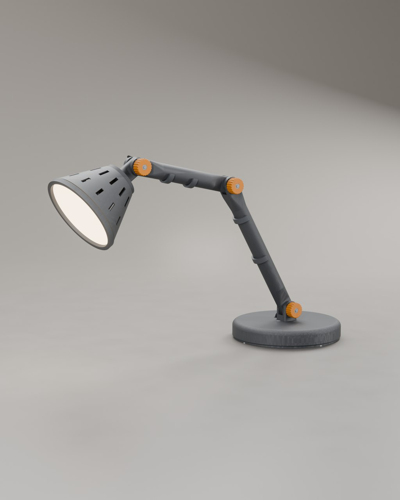
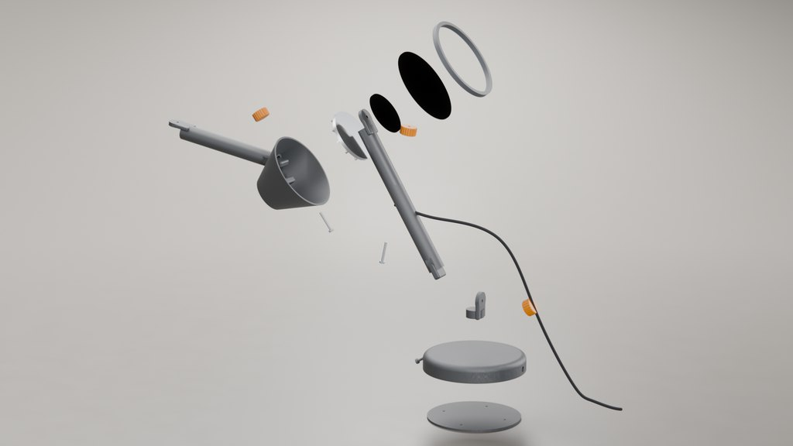
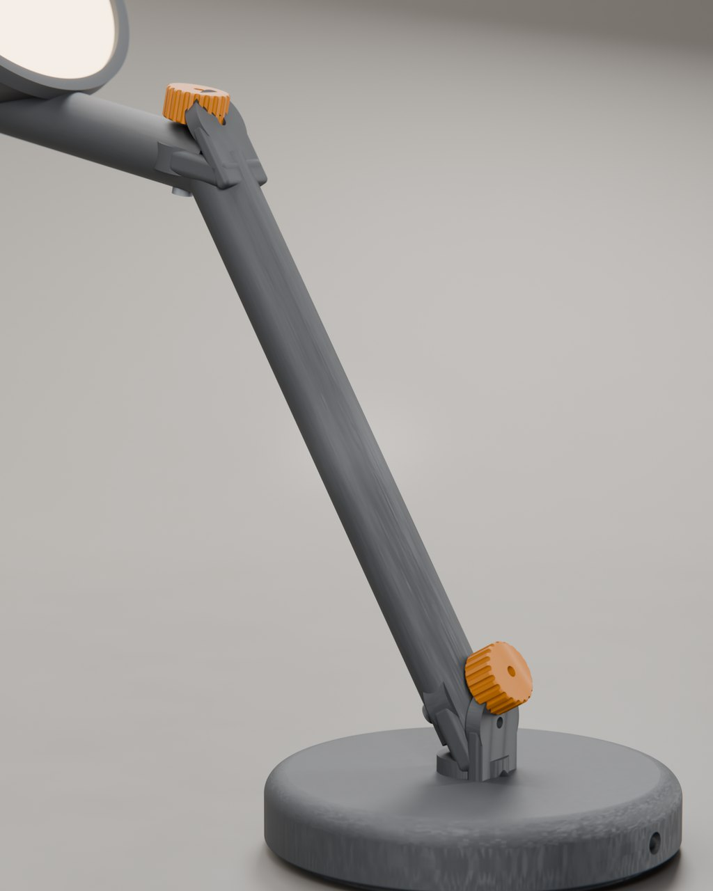
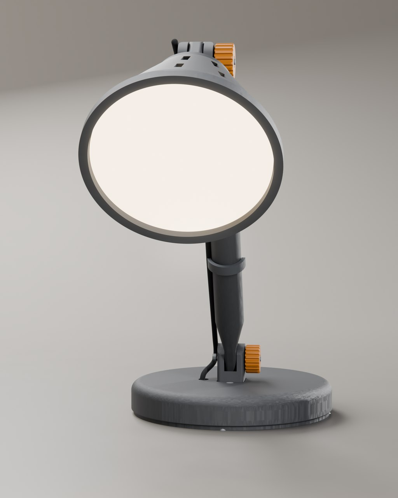

Stem desk lamp
A printed lamp that assembles without tools
- 2026
- Design for 3D printing
- Concept project

A 31-part desk lamp that reaches 403 mm across a desk, fourteen parts printed in PETG and three M4 joints tightened by hand with printed knurled knobs. Every part has an orientation where no overhang exceeds 45°, so the whole lamp prints without supports.
| Height to head joint | 276 mm |
|---|---|
| Reach | 403 mm |
| Base | 170 mm diameter × 24 mm |
| Parts | 31 (14 printed) |
| Assembled mass | 2.73 kg (2.23 kg of it ballast) |
| Tipping margin | 2.17× at full reach |
| Material | PETG |
| Arms | one part each |
| Joints | 3 × M4 |
| Supports | none required |
| Print time | 36 h for all 14 printed parts |
| Filament | 397 g PETG (sliced |
| Longest part | 256 mm |
The brief
A lamp someone could download, print at home and put together on a kitchen table: no support material to cut away, no press-fit that needs a mallet, and no tools beyond your hands. That rules out a lot of shapes before the design even starts.
Designed for the printer, not in spite of it
Each arm is a single part, 230 mm and 165 mm between pivots: a flat blade at each pivot that swells into a 24 mm round section with a 3 mm wall, oriented so the layer lines run along the load rather than across it. Each of the three joints is an M4 bolt through a printed tongue-and-fork with 0.3 mm clearance per side, which is the gap that stays free after a normal FDM print without post-drilling.

It has to stand up, not just look right
A 403 mm reach off a 170 mm base is a cantilever with nothing counterbalancing it. The first version weighed 466 g and put its centre of mass 204 mm out — almost three times past the rim — so it simply fell over. The base carries a 2.23 kg cast-iron ballast ring instead, and the assembly is rebuilt at five poses across its range and weighed part by part: the centre of mass never gets past 39 mm, a 2.17× margin at full reach, with no two parts touching in any pose.


The head
A 64 mm LED module sits on an 80 mm aluminium heatsink with twelve fins, and a printed bayonet ring twists on to hold a 112 mm diffuser. The shade is a 118 mm to 56 mm cone with a 2.4 mm wall, printed mouth-down so its outer surface never meets a support.
Numbers from an actual slice
Every printed part was run through the slicer rather than estimated: 36 hours and 397 g of PETG for the full set at 0.2 mm layers and 25% infill, with no support material anywhere, sliced from watertight meshes rather than from the render meshes. The slice also caught something the CAD did not: the lower arm is 256 mm long, so it will not fit straight on a 250 × 210 bed and has to be printed across the diagonal. That belongs in the build instructions, not in a surprise.
What you receive
Print-ready STL and 3MF for every printed part with its orientation noted, STEP and 3DM for the whole assembly, an exploded view, a bill of materials covering the three M4 bolts, the LED module, the heatsink and the cable, and the slicer report those numbers come from.
Deliverables
- Print-ready STL and 3MF per part
- Orientation and no-support notes
- STEP and 3DM assembly
- Exploded view and bill of materials